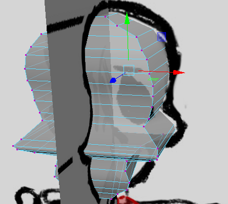

Currently it looks like:

We'll provide number of segments to skull

So to round it we'll make a sphere and give it a shape of skull

With the sphere selected in OBJECT MODE select

Now if we select the vertex and move it using gizmo then it snaps to surface
 ------------------------------->>>>>>>
------------------------------->>>>>>>
So we'll select the area we want and then move it
 -------->>>>>>>>>>>>
-------->>>>>>>>>>>>
Now we'll use relax tool to clear the geometry

Now it looks like

we can reduce the edges now
Use relax brush to get better results